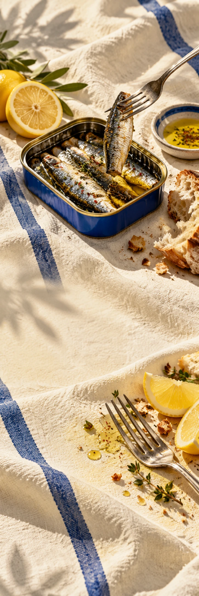

TIN TIN
Food & delicatessenMerkintroductie
GOOD THINGS COME IN TINS
OPEN A
LITTLE HOLIDAY.
Geen reservering nodig. Alleen een vork.
Sardines, goed brood en iets fris erbij. TIN TIN maakt van een klein blikje het begin van een lange middag aan tafel.
Ontdek de tafelKlein blik.
Groot tafelplan.
Geen reservering nodig. Alleen een vork.
Ontdek de tafel